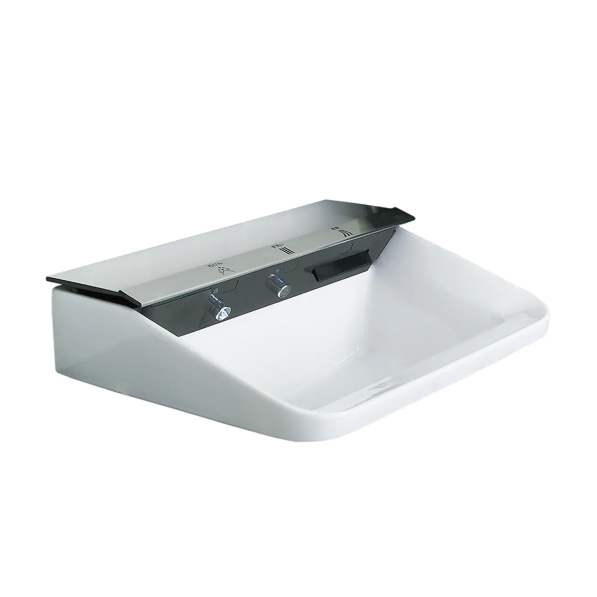
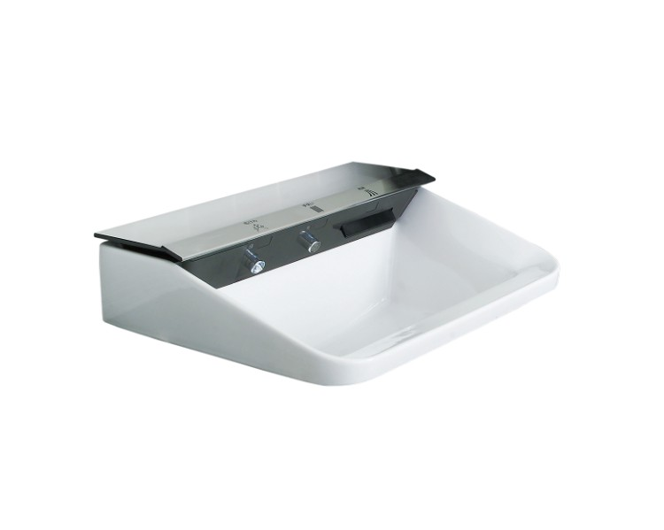

Chậu rửa 3 trong 1 L-C11A3-AS là dòng sản phẩm chậu rửa tích hợp chức năng tự động (Jet Bowl), mang đến một tiêu chuẩn vệ sinh hoàn toàn mới cho không gian hiện đại. Sản phẩm được nhập khẩu từ Nhật Bản và tích hợp các công nghệ thông minh để mang lại trải nghiệm rửa tay tối ưu, hợp vệ sinh và tiện nghi nhất.Vệ sinh 3 chức năng tự độngChậu rửa L-C11A3-AS tích hợp 3 chức năng thông minh, giúp quá trình vệ sinh cá nhân trở nên hoàn toàn tự động và hợp vệ sinh:Tự động lấy xà phòng tạo bọt: Chức năng tự động nhả xà phòng tạo bọt giúp người dùng dễ dàng lấy lượng xà phòng vừa đủ mà không cần chạm tay.Tự động phun nước: Vòi rửa mặt tự động kích hoạt khi nhận diện tay, giúp rửa sạch xà phòng mà không cần chạm vào vòi.Sấy khô tự động: Tính năng sấy khô tự động giúp làm khô tay ngay sau khi rửa, giảm thiểu việc sử dụng khăn giấy và tăng tính vệ sinh.Thiết kế và chất liệu cao cấp của chậu rửa 3 trong 1 L-C11A3-ASChậu có kiểu dáng hình chữ nhật hiện đại, mang lại vẻ đẹp mạnh mẽ, sang trọng khi đặt trên bàn đá.Kích thước lớn, tạo không gian sử dụng thoải mái.Chậu được làm từ chất liệu sứ cao cấp của INAX, có đặc tính kháng khuẩn, dễ lau chùi, duy trì bề mặt trắng sạch.Màu trắng truyền thống, dễ dàng phối hợp với các thiết bị vệ sinh khác.Lưu ý: Chậu rửa 3 trong 1 L-C11A3-AS chưa bao gồm phụ kiện đi kèm. Để sản phẩm hoạt động trọn vẹn các tính năng tự động, cần bổ sung các phụ kiện sau:Phụ kiện LF-21PAĐổi nguồn CE1-CNZ00353B30010Video giới thiệu chậu rửa INAXThông số kỹ thuậtChất liệuSứ cao cấpKiểu dángTreo tườngKích thước-Thiết kếDạng hình chữ nhậtThương hiệuINAX (Nhập khẩu từ Nhật Bản)Tính năng3 chức năng: - Tự động lấy xà phòng - Tự động phun nước - Sấy khôMàu sắcTrắngKhác- Chưa bao gồm phụ kiện LF-21PA và đổi nguồn CE1-CNZ00353B30010 - Hotline tư vấn và bảo hành: 18006633
Chậu rửa 3 trong 1 L-C11A3-AS
Chậu rửa thương hiệu INAX.
Đã cập nhật danh sách yêu thích.
DANH MỤC: Chậu rửa
MÃ SẢN PHẨM: L-C11A3-AS
DEPTH: 475mm
HEIGHT: 270mm
WIDTH: 566mm
Chậu rửa 3 trong 1 L-C11A3-AS là dòng sản phẩm chậu rửa tích hợp chức năng tự động (Jet Bowl), mang đến một tiêu chuẩn vệ sinh hoàn toàn mới cho không gian hiện đại. Sản phẩm được nhập khẩu từ Nhật Bản và tích hợp các công nghệ thông minh để mang lại trải nghiệm rửa tay tối ưu, hợp vệ sinh và tiện nghi nhất.Vệ sinh 3 chức năng tự độngChậu rửa L-C11A3-AS tích hợp 3 chức năng thông minh, giúp quá trình vệ sinh cá nhân trở nên hoàn toàn tự động và hợp vệ sinh:Tự động lấy xà phòng tạo bọt: Chức năng tự động nhả xà phòng tạo bọt giúp người dùng dễ dàng lấy lượng xà phòng vừa đủ mà không cần chạm tay.Tự động phun nước: Vòi rửa mặt tự động kích hoạt khi nhận diện tay, giúp rửa sạch xà phòng mà không cần chạm vào vòi.Sấy khô tự động: Tính năng sấy khô tự động giúp làm khô tay ngay sau khi rửa, giảm thiểu việc sử dụng khăn giấy và tăng tính vệ sinh.Thiết kế và chất liệu cao cấp của chậu rửa 3 trong 1 L-C11A3-ASChậu có kiểu dáng hình chữ nhật hiện đại, mang lại vẻ đẹp mạnh mẽ, sang trọng khi đặt trên bàn đá.Kích thước lớn, tạo không gian sử dụng thoải mái.Chậu được làm từ chất liệu sứ cao cấp của INAX, có đặc tính kháng khuẩn, dễ lau chùi, duy trì bề mặt trắng sạch.Màu trắng truyền thống, dễ dàng phối hợp với các thiết bị vệ sinh khác.Lưu ý: Chậu rửa 3 trong 1 L-C11A3-AS chưa bao gồm phụ kiện đi kèm. Để sản phẩm hoạt động trọn vẹn các tính năng tự động, cần bổ sung các phụ kiện sau:Phụ kiện LF-21PAĐổi nguồn CE1-CNZ00353B30010Video giới thiệu chậu rửa INAXThông số kỹ thuậtChất liệuSứ cao cấpKiểu dángTreo tườngKích thước-Thiết kếDạng hình chữ nhậtThương hiệuINAX (Nhập khẩu từ Nhật Bản)Tính năng3 chức năng: - Tự động lấy xà phòng - Tự động phun nước - Sấy khôMàu sắcTrắngKhác- Chưa bao gồm phụ kiện LF-21PA và đổi nguồn CE1-CNZ00353B30010 - Hotline tư vấn và bảo hành: 18006633
DANH MỤC: Chậu rửa
MÃ SẢN PHẨM: L-C11A3-AS
DEPTH: 475mm
HEIGHT: 270mm
WIDTH: 566mm